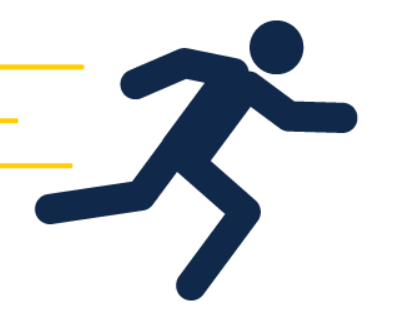
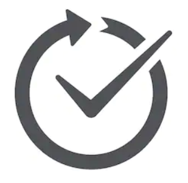

Ovice is a Services eco-group developed in order to provide services by the student and to the students.We help students seek and provide services on campus.
Ovice helps students to show set of skills by offering services to their peers and people in surrounding communities and also seek services.WHY OVICE ?
|  |  |  |
|
Quick |
Convenient |
verified |
Our Services
Ovice is an on hand mobile application which allows you to book a service from your home at your door step. |
Ovice provides two applications one for service providers who provide service to earn money and also service seekers who can select any among group of service providers |
You can also use the Ovice app to request time and cost estimates from service providers for a particular service. |
Whether you want help with note-taking, hairstyling, subletting, or dorm shifting , seeking a professional service on campus could be an insanely expensive and long exercise. Professional providers often give you a time range instead of an appointment. |